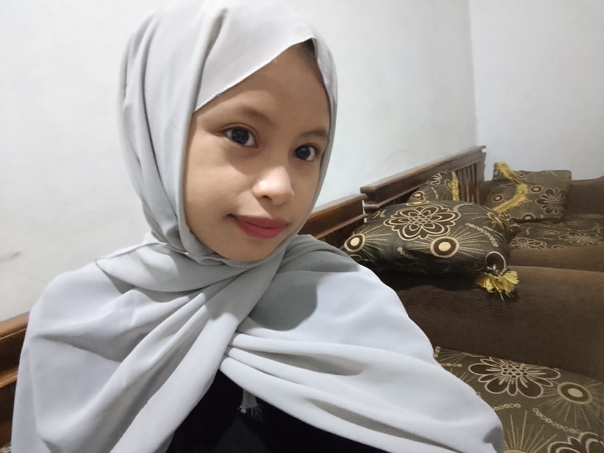

Data Diri

Nama: WULAN AZALIA PUTRI
Kelas: XI TKJ 3
No. Absen: 33
Sekolah: SMK NEGERI 1 BLADO
🎓 Riwayat Pendidikan
🧸 TK
RA UMRI
📚 SD
MI ISLAMIYAH TAMBAKBOYO
🏫 SMP
SMP NEGERI 3 REBAN
🎓 Sekarang
SMK NEGERI 1 BLADO
🌷 Kegiatan Saat Ini
🏫 Sekolah — belajar dan mengikuti kegiatan sekolah.
📖 Belajar — mempelajari hal-hal baru.
✨ Mengembangkan Diri — mengembangkan bakat dan kemampuan.
☁️ Motto Hidup
“Jangan takut untuk bermimpi, karena setiap langkah kecil membawa kita lebih dekat kepada impian.” ✨
🌸 Timeline Hidupku
🧸 Masa Kecil
Saat masih kecil, aku suka bermain, dan menghabiskan waktu bersama keluarga..
📚 Masuk SD
Aku mulai mengenal banyak teman, belajar membaca, menulis, berhitung, dan mencoba berbagai kegiatan baru.
🏫 Masuk SMP
Masa SMP menjadi pengalaman baru. Aku belajar menjadi lebih mandiri dan mulai mengenal banyak hal.
🌟 Momen Berkesan
Salah satu hal yang berkesan adalah ketika bisa berkumpul bersama teman, keluarga, dan menciptakan kenangan bersama.
💙 Fun Facts Tentang Aku
< class="facts">
🎧
Suka Musik
Aku suka mendengarkan musik.
🌷
Suka Merajut
Aku suka merajut saat sedang santai.
🌸
Suka Hal lucu
Suka benda dengan desain lucu dan warna pastel terutama BIRU.
📸
Suka menyimpan kenangan
Suka mengabadikan momen seru menjadi kenangan yang menyenangkan.
🦋
Suka Belajar
Aku senang menemukan pengetahua dan pengalaman baru.
⭐
Punya Impian
Aku ingin terus berkembang dan mencapai impian sedikit demi sedikit.